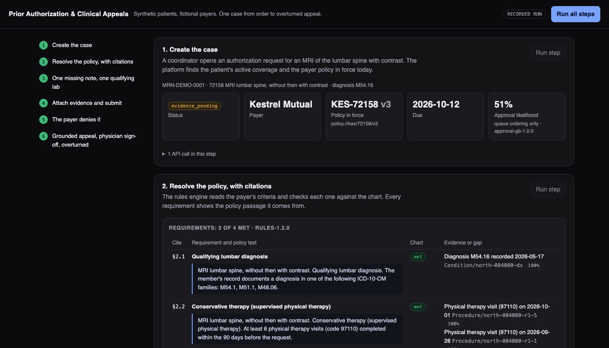
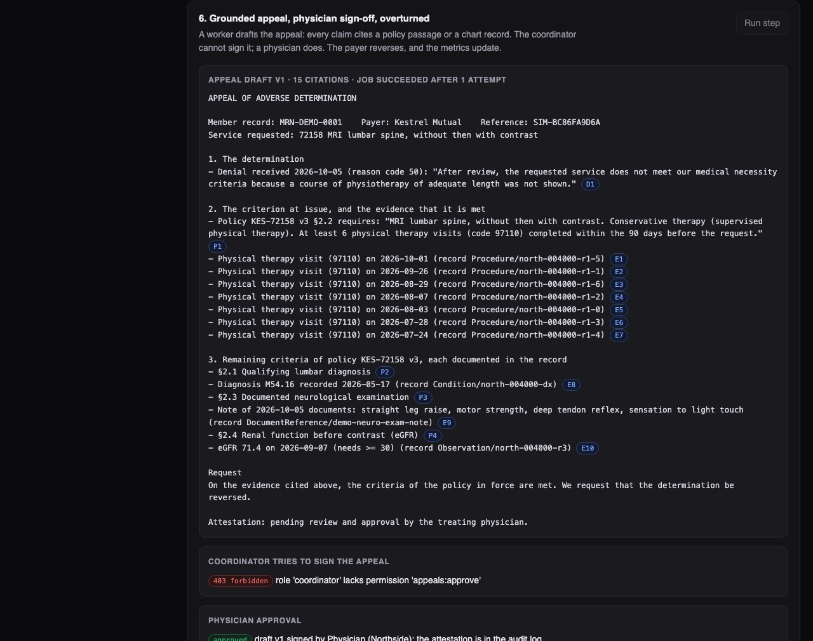

Python · Healthcare workflow · 2026-10
Can Software Carry a Prior Authorization From Order to Appeal?
A case system that reads the insurer's policy, checks each rule against the patient's chart, shows what is missing, and drafts an appeal in which every sentence cites its source. A doctor must sign before anything is sent. On an invented clinic it took one MRI request from 3 of 4 rules met to an overturned denial.

Built from a written blueprint as one vertical slice, on synthetic data: 4,201 invented patients, three fictional insurers and policies written for the demo. The insurer is a simulator. The numbers show the parts recover structure that was planted; they are not evidence about real insurers or real charts, and nothing here is medical or coverage advice. No language model is used: the appeal is assembled from templates. Not built: Kafka, Terraform, single sign-on, a real payer connection.
01 — The problem
Before many scans, operations and drugs, a clinic must ask the patient's insurer for permission. This is prior authorization. Staff look up the insurer's rules for that procedure, dig through the chart for proof (a diagnosis, weeks of therapy, a lab result, an exam note), send it, wait, and often write an appeal after a denial. Can software hold that whole chain in one place, show its evidence for every step, and keep the clinician in charge of the medical decisions?
This is blueprint 1 of ten in an enterprise build book. The book says to build the demo scenario first as a complete slice, so that is what this is.
02 — What I built
A Python service on PostgreSQL with a worker and a web page, started by one docker compose up.
- Ingestion: patient records arrive as FHIR bundles (the standard health-data format) and become dated, coded events. House codes are mapped to standard ones.
- Rules engine: each policy rule is data (for example: at least 6 therapy visits in 90 days). The engine returns met or missing, the records that prove it, and the gap in words.
- Retrieval: a search over policy passages that combines exact-word matching (BM25) with meaning-based matching, filtered by insurer and procedure.
- Appeals: a background job writes the appeal; a gate rejects any claim line without a citation; only the physician role can approve.
- Platform: each clinic's rows are fenced off by the database itself, every write can be safely retried, and the audit log is a hash chain.
03 — How it was built
- 01
Rules as data, with the proof attached
A policy rule is stored as a small record, not as code: a type, a threshold and a time window, plus the section of the policy it came from. The engine checks it against the chart and returns three things: met or not, the exact records that prove it, and a sentence describing the gap. For the demo patient it found 7 therapy visits and a kidney-function lab of 71.4 (the rule needs at least 30), and reported that the only neurological exam note was 74 days old when the policy allows 30.
("prior_procedure", "97110", {"codes": ["97110"], "min_count": 6, "within_days": 90}, "Conservative therapy") - 02
Find the passage even when the words differ
The insurer's denial said physiotherapy; the policy says physical therapy. Word matching alone picked the right passage first only 21% of the time on 230 test questions. Meaning-based matching alone got 49%. Fusing the two rankings got 66%, and that is what links a denial to the rule it is about. Filtering by insurer and procedure matters more than either ranker: without it the same rule exists in three insurers' policies and the top hit is right 15% of the time.
fused[i] += 1 / (60 + rank) # reciprocal-rank fusion of BM25 and dense - 03
A person accepts the evidence before it is sent
The system proposes which records satisfy which rule, with a confidence. It does not submit on its own: a coordinator accepts the links, and submitting earlier returns an error that lists what is unmet or unconfirmed. An override is possible only with a written reason, which lands in the audit log.
raise Problem(409, "requirements_unmet", ...) - 04
An appeal where every claim has a source
After the denial, a background worker drafts the appeal: the insurer's own sentence, the policy passage at issue, then each chart record that meets it. Every claim line ends in a marker such as [P1] or [E3] that points to a stored passage or record. A check refuses any draft with an uncited line, and the job fails instead of handing a doctor an unsupported letter. This is why the text comes from templates and not from a language model.
problems.append(f"claim without citation: {line[:80]}") - 05
The doctor signs, and the database keeps tenants apart
The coordinator's attempt to approve the appeal is rejected (403); the physician role approves with a written attestation. Separately, every request runs as a restricted database role with the clinic's id set, and row-level security filters the tables, so another clinic asking for this case gets a 404. A test tries exactly that. The audit log refuses edits, and each row stores a hash of the one before, so a changed row is detectable.
USING (tenant_id = current_setting('app.tenant_id')::uuid)
04 — Results
The demo case. MRI of the lumbar spine with contrast, insurer policy KES-72158 version 3: 3 of 4 rules met at creation, 4 of 4 after one new exam note, submitted, denied for medical necessity, appealed with 15 citations, signed by the physician, overturned by the simulated insurer. Nine audit events, chain verified.

Each learned part against a simple baseline (invented data, so read these as a check that the parts work, nothing more):
| Part | Result | Baseline |
|---|---|---|
| Passage search, top hit right | 66.1% | 20.9% |
| Approval score (AUC) | 0.907 | 0.663 |
| Denial reason, unseen wording | 65.2% | 16.7% |
The denial reader is weak on wording it has not seen, so the product does not trust it blindly: a reason code printed on the letter wins, and a prediction under 60% confidence is flagged for a person. The approval score only orders the work queue; it never denies or delays a request.
In the invented history, a complete request was denied 6.8% of the time, one missing a clinical note 63.9%, one missing therapy visits 71.1%.
Speed. Three read endpoints in rotation: 336 requests a second with 8 clients, 95% under 50 ms. The first run managed 21 a second: the analytics query scanned whole tables because Postgres does not index foreign keys automatically. Two indexes fixed it.
Checks. 30 tests against a real Postgres: the rules, the grounding gate, the full demo, a permission matrix, a cross-tenant break-in attempt, job retries into a dead-letter list, and tampering with the audit log.
05 — What I'd do next
- Test the rules and the denial reader on real, de-identified payer letters; that is where the 65% would be decided.
- A real payer connection (the X12 278 transaction) in place of the simulator.
- Single sign-on, expiring tokens and encryption of note text.